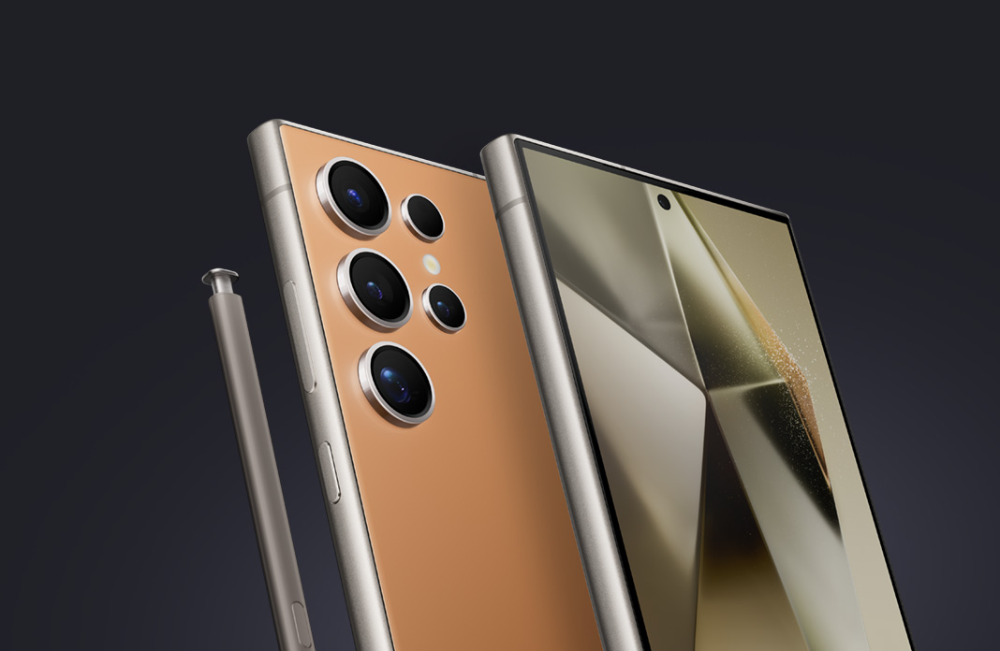
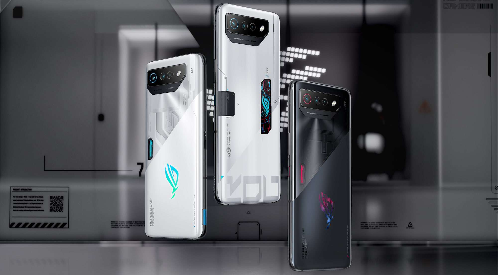

Os Celulares Mais Potentes de 2024
postado em 27 de setembroSe você é um entusiasta da tecnologia ou apenas alguém que busca o melhor desempenho em um smartphone, está no lugar certo. Em 2024, a competição entre os fabricantes de celulares está mais acirrada do que nunca, e os modelos que se destacam prometem trazer experiências incríveis. Neste post, vamos explorar alguns dos celulares mais potentes do ano, suas especificações e o que os torna tão especiais.
1. Apple iPhone 15 Pro Max
O iPhone 15 Pro Max continua a tradição da Apple em oferecer desempenho excepcional. Equipado com o chip A17 Pro, esse modelo não só garante velocidade e eficiência energética, mas também recursos avançados de processamento gráfico, tornando-o ideal para gamers e criadores de conteúdo. Com uma tela Super Retina XDR de 6,7 polegadas e um sistema de câmeras com impressionantes capacidades fotográficas, ele é uma escolha premium para quem busca o melhor da tecnologia.
2. Samsung Galaxy S24 Ultra
O Galaxy S24 Ultra é a verdadeira joia da coroa da Samsung. Com um processador Exynos 2400 (ou Snapdragon 8 Gen 3, dependendo da região) e até 16 GB de RAM, ele proporciona uma performance inigualável. Sua tela AMOLED de 6,8 polegadas é perfeita para assistir vídeos e jogar, enquanto a câmera quádrupla com zoom de 100x transforma cada foto em uma obra-prima. Para quem deseja um smartphone que combina potência com versatilidade, o S24 Ultra é imbatível.
3. Xiaomi 13 Pro
A Xiaomi não fica atrás quando se trata de oferecer desempenho robusto. O Xiaomi 13 Pro é equipado com o Snapdragon 8 Gen 2, que garante que você possa executar qualquer aplicativo ou jogo com facilidade. Além disso, a tela AMOLED de 6,73 polegadas e o sistema de câmeras Leica oferecem qualidade visual impressionante. A combinação de um design elegante e um hardware poderoso faz desse celular uma excelente escolha para os amantes da tecnologia.
4. Asus ROG Phone 7
Para os gamers, o Asus ROG Phone 7 é uma verdadeira máquina de jogos. Com um processador Snapdragon 8 Gen 2 e até 18 GB de RAM, ele é projetado para lidar com os jogos mais exigentes do mercado. Sua tela de 6,78 polegadas com taxa de atualização de 165 Hz oferece uma jogabilidade suave e responsiva. Além disso, o design ergonômico e as opções de resfriamento avançadas garantem que você jogue por horas sem superaquecimento.
5. OnePlus 11 Pro

O OnePlus 11 Pro também merece destaque com seu desempenho impressionante e uma experiência de usuário fluida. Equipado com Snapdragon 8 Gen 2 e até 16 GB de RAM, ele oferece velocidade e multitarefa sem esforço. Sua tela AMOLED de 6,7 polegadas e a configuração de câmeras versátil fazem dele um ótimo celular para o dia a dia e para capturar momentos especiais.